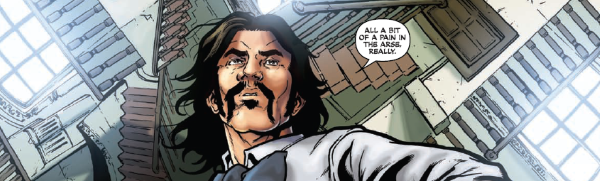

These are the continuing adventures of a ghostly investigator made corporeal by a magic jacket and armed mostly with savoir fu (which is a bit like super-chutzpah for any Paranoia fans) and his trusty (golem) sidekick.
Art by Jon Davis-Hunt
| Story Title | Parts | Pages | w indicates a wraparound coverCovers | Year(s) | Issues | Writer | Artist | Colourist | Letterer |
|---|---|---|---|---|---|---|---|---|---|
From Past ImperfectAntiques Phantasma | 1 | 5 | 0 | 2009 | 1631 | Alec Worley | Warren Pleece | <-- | Simon Bowland |
| Return of the Chap | 5 | 25 | 0 | 2010 | 1710-1714 | Alec Worley | Warren Pleece | <-- | Ellie de Ville |
| The House That Dripped Devilry | 5 | 26 | 1730: Jon Davis‑Hunt 1 | 2011 | 1726-1730 | Alec Worley | Jon Davis-Hunt | <-- | Simon Bowland |
| A Christmas Ghost Story | 1 | 6 | 0 | 2011 | p2012 | Alec Worley | Jon Davis-Hunt | <-- | Ellie de Ville |
| The Copper Conspiracy | 8 | 41 | 0 | 2013 | 1824-1831 | Alec Worley | Warren Pleece | <-- | Ellie de Ville |
| >> Features << | |||||||||
| Behind the Thrills: Dandridge | 1 | 1 | 0 | 2011 | 1726 | Michael Molcher | Jon Davis-Hunt | <-- | n/a |
| year | episodes | pages |
| 2001 | 0 | 0 |
| 2002 | 0 | 0 |
| 2003 | 0 | 0 |
| 2004 | 0 | 0 |
| 2005 | 0 | 0 |
| 2006 | 0 | 0 |
| 2007 | 0 | 0 |
| 2008 | 0 | 0 |
| 2009 | 1 | 5 |
| 2010 | 5 | 25 |
| 2011 | 6 | 32 |
| 2012 | 0 | 0 |
| 2013 | 8 | 41 |
| 2014 | 0 | 0 |
| 2015 | 0 | 0 |
| 2016 | 0 | 0 |
| 2017 | 0 | 0 |
| 2018 | 0 | 0 |
| 2019 | 0 | 0 |
| 2020 | 0 | 0 |
| 2021 | 0 | 0 |
Comic strip data (excludes other content):